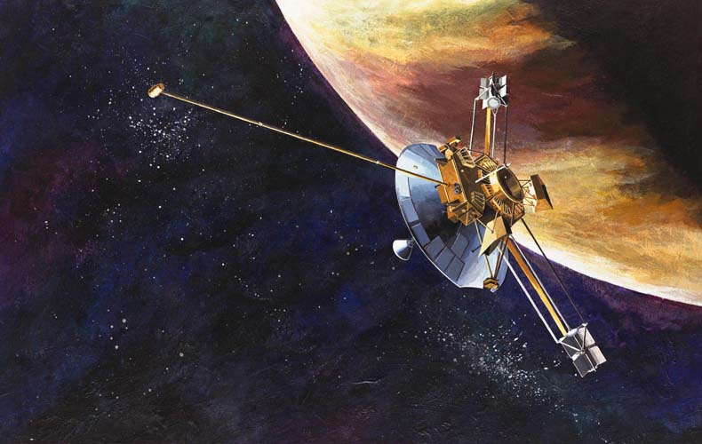
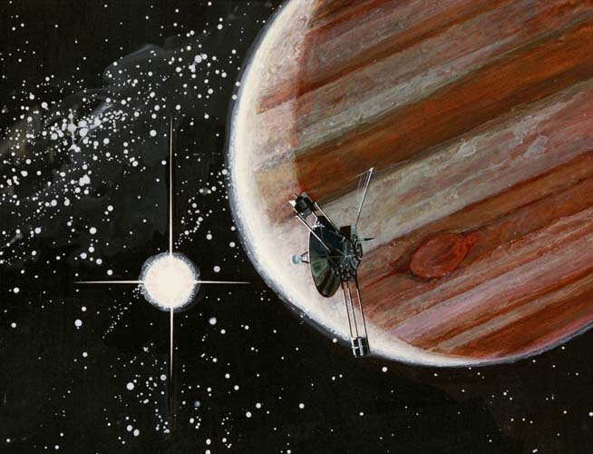

Пионер-10
Запущен 3 марта 1972 носителем Атлас-Центавр. В феврале 1973 года «Пионер-10» впервые пересёк пояс астероидов, ближе всего (на 8,8 млн км) подойдя к астероиду (307) Ника и обнаружив пылевой пояс ближе к Юпитеру. Аппарат пролетел на расстоянии 132 тыс. км от облаков Юпитера 4 декабря 1973 года. Были получены данные о составе атмосферы Юпитера, уточнена масса планеты, измерено её магнитное поле, а также установлено, что общий тепловой поток от Юпитера в 2,5 раза превышает энергию, получаемую планетой от Солнца. «Пионер-10» также позволил уточнить плотность четырёх крупнейших спутников Юпитера.
Последний контакт с «Пионером-10» состоялся 22—23 января 2003 года. В это время космический аппарат находился на расстоянии 82,19 а. е. от Солнца и удалялся от него с относительной скоростью 12,224 км/c. Дальнейшая судьба «Пионера-10» неизвестна, но предполагается, что он продолжает полёт и со временем покинет Солнечную систему, направляясь в сторону звезды Альдебаран.
По просьбе Карла Сагана Пионер-10 и Пионер-11 несут в себе пластины размером 152 на 229 мм с золотым анодированным алюминием, на случай, если любой из космических аппаратов когда-либо будет найден разумными формами жизни из другой планетарной системы. Пластина прикреплена к опорам антенны, чтобы обеспечить некоторую защиту от межзвёздной пыли.
В феврале 1976 года аппарат пересёк орбиту Сатурна, а 11 июля 1979 года — орбиту Урана. 13 июня 1983 года «Пионер-10» стал первым космическим аппаратом, пересекшим орбиту Нептуна, самой далёкой на тот момент планеты Солнечной системы. Официально миссия «Пионера-10» закончилась 31 марта 1997 года, на расстоянии около 67 а. е. от Солнца, хотя аппарат продолжал передавать данные.
Характеристики
Масса 258,8 кг
Мощность 155 Вт (при запуске)